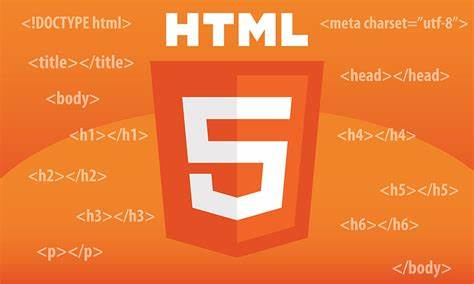
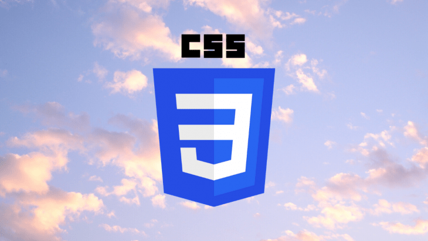

HTML5
2021.07.01

웹 문서를 제작하는 데 쓰이는 기본 프로그래밍 언어 HTML(hypertext markup language)의 최신규격으로, 웹페이지를 구성하는 데 있어 지배적인 역할을 하는 마크업 언어(markup language)이다. 별도 설치 없이 웹브라우저 상에서 다양한 멀티미디어 콘텐츠와 앱 등을 바로 제공할 수 있다.
HTML 5는 별도 프로그램을 깔지 않아도 인터넷 브라우저상에서 화려한 그래픽 효과를 구현하며, 음악ㆍ동영상을 자유롭게 감상할 수 있는 마크업 언어(markup language)이다.
CSS
2021.07.01

종속형 시트 또는 캐스케이딩 스타일 시트(Cascading Style Sheets, CSS)는 마크업 언어가 실제 표시되는 방법을 기술하는 언어로[1], HTML과 XHTML에 주로 쓰이며, XML에서도 사용할 수 있다. W3C의 표준이며, 레이아웃과 스타일을 정의할 때의 자유도가 높다.
마크업 언어(ex: HTML)가 웹사이트의 몸체를 담당한다면 CSS는 옷과 액세서리처럼 꾸미는 역할을 담당한다고 할 수 있다. 즉, HTML 구조는 그대로 두고 CSS 파일만 변경해도 전혀 다른 웹사이트처럼 꾸밀 수 있다.